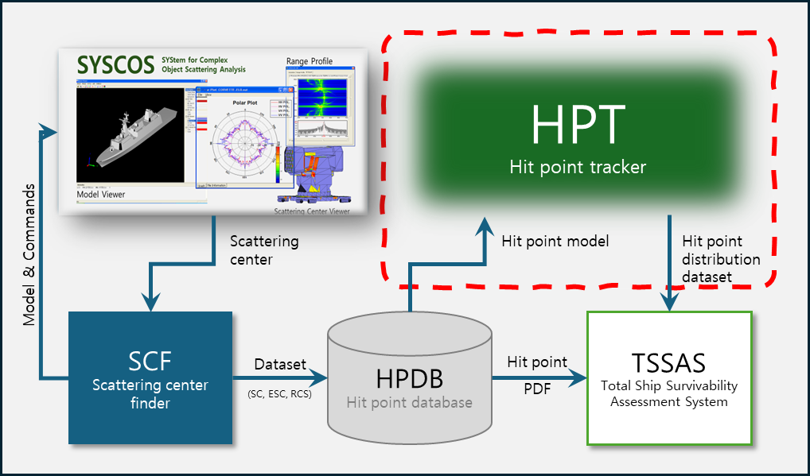

Contact Information
Email: parksj0314@tu.ac.kr
Personal Email: parksj0314@gmail.com
Mobile Phone: +82-10-7556-1099
Office: Tongmyong University, 261 Suyeong-ro, Nam-gu, Busan, Korea
Biography & Overview
Prof. Sung-Ju Park received his B.S. degree from Tongmyong University (2014), and M.S. and Ph.D. degrees in Naval Architecture and Ocean Engineering from Inha University (2016, 2020) under the supervision of Prof. Joonmo Choung.
Currently, he leads national defense and regional innovation initiatives as the Vice Director of the RISE Project Center and Director of the I-URP Center at Tongmyong University. He serves as a Board Director for the Society of Naval Architects of Korea (SNAK) and a Technical Advisory Committee Member for the Defense Acquisition Program Administration (DAPA).
Education
Supervisor: Prof. Joonmo Choung · Dissertation: Study on Ductile Fracture for Shell Element Application
Dissertation: Development of 3D fracture strain surface of Arctic Marine Structural Steel (EH36)
Career Milestone Summary
